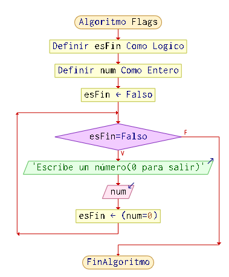
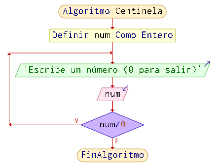

Sentencia DO-WHILE¶
El bucle do-while es una variante del bucle while que proporciona el lenguaje de programación Java. Se puede expresar de la siguiente forma:
//inicializadores
do {
//bloque de código: sentencia(s)
//actualizador
} while (condición);

La diferencia entre do-while y while es que do-while evalúa la condición después de ejecutar el cuerpo del bucle. Por lo tanto, las sentencias dentro del bloque do-while se ejecutan al menos una vez.
Una estructura while correctamente diseñada debe incluir 3 partes:
- un inicializador,
- una condición de bucle y
- un actualizador. El actualizador debe garantizar que la condición de entrada del bucle finalmente falle, permitiendo así que el bucle termine.
Ejemplo: Muestra los números del 0 al 4¶
int i = 0;
do {
System.out.println(i);
i++;
} while (i < 5);
Salida
0
1
2
3
4
Traza
| Iteración | Variable | i < 5 | Acción |
|---|---|---|---|
| i = 0 | no se verifica | imprime 0, incrementa i=1 | |
| 1a | i = 1 | true | imprime 1, i = 2 |
| 2a | i = 2 | true | imprime 2, i = 3 |
| 3a | i = 3 | true | imprime 3, i = 4 |
| 4a | i = 4 | true | imprime 4, i = 5 |
| 5a | i = 5 | false | termina |
Ejemplo: Sumar los números del 0 al 10¶
int i = 0; //inicializador
int suma = 0;
do {
suma = suma + i;
i++;//actualizador
} while (i <= 10);
System.out.println(suma);
Salida
55
Salir de un bucle: Flag o bandera¶
La bandera para salir de un bucle es una técnica de programación que consiste en utilizar una variable booleana (generalmente llamada "bandera" o "flag") que controla cuándo debe terminar la ejecución de un bucle. Esta variable se evalúa en cada iteración del bucle y, cuando cambia de valor (por ejemplo, de true a false), el bucle se interrumpe.
Esta técnica es útil cuando no conoces el número exacto de iteraciones y el bucle debe detenerse cuando se cumpla una condición específica.

Scanner scanner = new Scanner(System.in);
int num;
boolean esFin=false;
while(!esFin){
System.out.println("Introduce un número(0 para salir)");
num=scanner.nextInt();
if(num==0) esFin = true;
}
Salir de un bucle: Centinela¶
Un centinela es un valor especial que marca el final de un bucle o el fin de una secuencia de datos. En lugar de usar una variable booleana, el bucle termina cuando se encuentra un valor específico.
Ejemplo:
Un bucle que sigue pidiendo al usuario números hasta que introduce un valor centinela, como 0, para indicar que desea terminar.

int numero;
do {
System.out.print("Introduce un número (0 para salir): ");
numero = scanner.nextInt();
} while (numero != -0);
Control de la entrada del usuario mediante while¶
Las estructuras en bucle permiten controlar la entrada del usuario en nuestros programas. Tenemos varios casos de uso. Vamos a ver algunos.
Ejecutar el programa hasta que se introduzca un valor en concreto(centinela)¶
Este caso: Vamos a suponer que el programa terminará cuando el número sea negativo(puede ser cualquier condición)
1. Mostrar mensaje al usuario: "Introduzca un número o ingrese un número negativo para terminar."
2. Leer el dato ingresado por el usuario.
3. Mientras el dato no sea negativo:
1. Ejecutar las acciones correspondientes al dato ingresado.
2. Mostrar mensaje al usuario: "Introduzca otro número o ingrese un número negativo para terminar."
3. Leer el siguiente dato ingresado por el usuario.
4. Fin del bucle while.
5. Fin del programa.
Por ejemplo, si queremos un programa en el que el usuario introduce números en los que le dirá si es "par" o "impar" hasta que introduzca "0"
Scanner scanner = new Scanner(System.in);
System.out.println("Introduzca un número ó \"0\" para terminar:");
int numero = scanner.nextInt();
//miestras no sea 0
while (numero != 0) {
// Realizar acciones con el número ingresado
if(numero%2 == 0)
System.out.println("El número es par");
else
System.out.println("El número es impar");
// Pedir al usuario otro número
System.out.println("Introduzca un número ó \"0\" para terminar:");
numero = scanner.nextInt();
}
System.out.println("Programa finalizado.");
}

Observa como es necesario pedir el valor antes de entrar en el while
Leer opci√≥n de menú válida del usuario o dato de usuario válido¶
Si las opciones por parte del usuario tienen que ser limitadas. Podemos mediante un bucle pedir al usuario la opción hasta que sea una opción válida.
Scanner scanner = new Scanner(System.in);
int opcion;
do {
System.out.println("Menú de opciones:");
System.out.println("1. Opción 1");
System.out.println("2. Opción 2");
System.out.println("3. Opción 3");
System.out.println("4. Opción 4");
System.out.print("Seleccione una opción: ");
opcion = scanner.nextInt();
} while (opcion<1 || 4<opcion);
Esto mismo te sirve para cualquier entrada de datos del usuario, pero hay que ajustar la condición
Scanner scanner = new Scanner(System.in);
String respuesta;
do {
System.out.print("¿Desea continuar? (s/n): ");
respuesta = scanner.nextLine();
} while (!respuesta.equalsIgnoreCase("s") && !respuesta.equalsIgnoreCase("n"));
System.out.println("Fin");
El método equalsIgnoreCase compara dos string ignorando mayúsculas y minúsculas
En programa más complejo, podemos incluir el menú de la siguiente forma. En este ejemplo, mostramos un menú con las opciones de una calculadora simple. Mientras no introduzca un opción válida, mostramos el menú
Scanner scanner = new Scanner(System.in);
int opcion;
int num1 = 0;
int num2 = 0;
int resultado;
do {
//mientras no sea válida la entrada
do {
//mostramos el menú
System.out.println("Menú:");
System.out.println("1. Sumar");
System.out.println("2. Restar");
System.out.println("3. Multiplicar");
System.out.println("4. Dividir");
System.out.println("5. Salir");
System.out.print("Ingrese su opción: ");
//leemos la opción
opcion = scanner.nextInt();
} while (opcion<1 || opcion>5);
//leemos los número si quiere seguir
if (opcion != 5) {
System.out.print("Ingrese el primer número: ");
num1 = scanner.nextInt();
System.out.print("Ingrese el segundo número: ");
num2 = scanner.nextInt();
//realizamos la acción
switch (opcion) {
case 1:
resultado = num1 + num2;
System.out.println("La suma es: " + resultado);
break;
case 2:
resultado = num1 - num2;
System.out.println("La resta es: " + resultado);
break;
case 3:
resultado = num1 * num2;
System.out.println("La multiplicación es: " + resultado);
break;
case 4:
resultado = num1 / num2;
System.out.println("La división es: " + resultado);
break;
}
}
//salimos cuando la opción sea 5
} while (opcion != 5);
System.out.println("¡Hasta luego!");
Comprobar en Scanner que la entrada es válida¶
Scanner nos permite comprobar si la entrada es válida cuando el usuario introduce el valor. De esta forma evitaremos errores en tiempo de ejecución por lectura inválida
Ejemplo, si queremos leer un entero, mediante un while repetimos la petición de datos hasta que sea válida la entrada
Scanner scanner = new Scanner(System.in);
System.out.print("Ingrese un número entero: ");
//comprobamos si es un entero
while (!scanner.hasNextInt()) {
System.out.println("Entrada inválida. Por favor, ingrese un número entero:");
scanner.next(); // Consumimos la entrada inválida
}
int numero = scanner.nextInt();
System.out.println("Has introducido el número: " + numero);